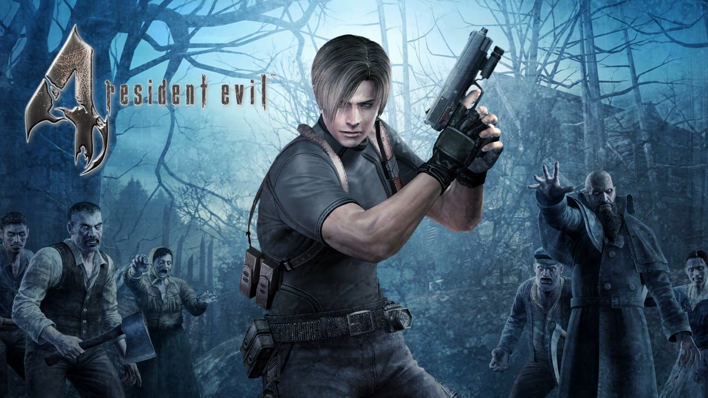
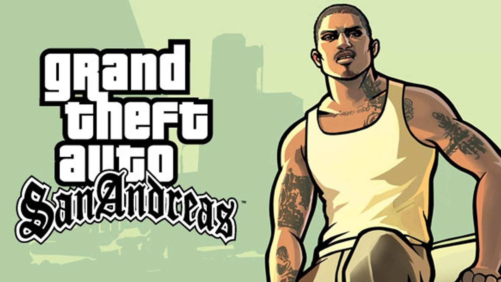
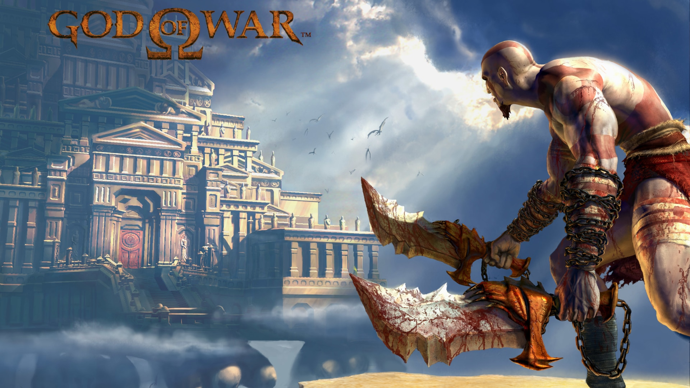
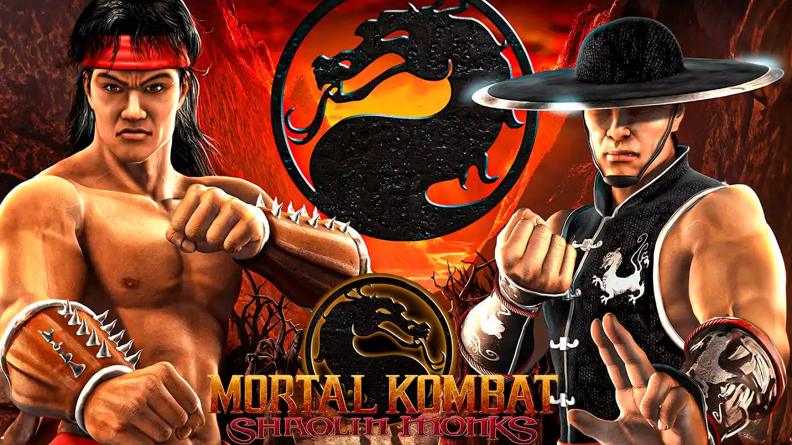
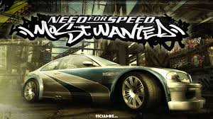

Nome
Resident Evil 4
Lançamento
11 de janeiro de 2005
Cópias vendidas
Cerca de 2,3 milhões de cópias até 2021.

Nome
Grand Theft Auto: San Andreas
Lançamento
26 de outubro de 2004
Cópias vendidas
Cerca de 27,5 milhões de cópias até 2011.

Nome
God of War
Lançamento
22 de março de 2005
Cópias vendidas
cerca de 4,6 milhões de cópias até 2012.
O PlayStation 2 foi lançado em 2000 pela Sony como sucessor do PlayStation, trazendo mais potência e a novidade de reproduzir DVDs, o que ajudou a aumentar sua popularidade.
O console fez grande sucesso no mundo todo, com muitos jogos disponíveis e a possibilidade de rodar jogos do primeiro PlayStation, atraindo vários tipos de jogadores. Em 2004, ganhou uma versão mais compacta, o PS2 Slim, que manteve seu sucesso por mais tempo.
Ao longo dos anos, se tornou um dos consoles mais importantes da história, com mais de 160 milhões de unidades vendidas, marcando gerações de jogadores.
O PlayStation 2 possuía diversas características que o tornaram muito popular na sua época. Ele contava com leitor de CDs e DVDs, gráficos mais avançados que o console anterior, controle DualShock 2 com vibração e sensibilidade, além de ser compatível com jogos do primeiro PlayStation. Também utilizava memory cards para salvar o progresso e tinha uma enorme variedade de jogos disponíveis.
Como inovação, o PlayStation 2 se destacou principalmente por funcionar também como reprodutor de DVD, algo moderno para a época e que fez muitas pessoas comprarem o console não só para jogar, mas também para assistir filmes. Além disso, ajudou a popularizar o videogame como uma central multimídia dentro de casa. Outra inovação foi o lançamento da versão Slim, mais compacta e leve, que contribuiu para manter o sucesso do console por mais tempo.

Nome
Bully
Lançamento
17 de outubro de 2006
Cópias vendidas
Cerca de 1,5 milhão de cópias até 2008.

Nome
Mortal Kombat: Shaolin Monks
Lançamento
16 de setembro de 2005
Cópias vendidas
Cerca de 1 milhão de cópias até 2009.

Nome
Need for Speed: Most Wanted
Lançamento
15 de novembro de 2005
Cópias vendidas
Cerca de 16 milhões de cópias até 2013.
Feito pela aluna Thais C. Bohnenberger
 @t.bonennn |
@t.bonennn |
 thaisbonhen@gmail.com
thaisbonhen@gmail.com